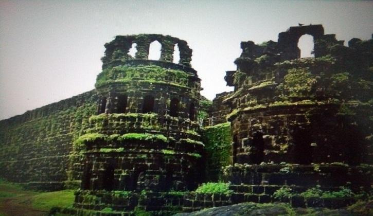

|  |
Sinhagad is a hill fortress located at around 35 km southwest of the city of Pune, India. Some of the information available at this fort suggests that the fort could have been built 2000 years ago. The caves and the carvings in the Kaundinyeshwar temple stand as proofs for the same. Previously known as Kondhana, the fort had been the site of many battles, most notably the Battle of Sinhagad in 1670. Perched on an isolated cliff of the Bhuleswar range in the Sahyadri Mountains, the fort is situated on a hill about 760 metres above ground and 1,312 metres above mean sea level.[citation needed] The Sinhagad (Lion's Fort) was strategically built to provide natural protection due to its very steep slopes. The walls and bastions were constructed only at key places. There are two gates to enter the fort, the Kalyan Darwaza and Pune Darwaza which are positioned at the south east and north-east ends respectively.[1] The fort was also strategically located at the centre of a string of other Maratha Empire forts such as Rajgad Fort, Purandar Fort and Torna Fort.
The Sinhgad Fort was initially known as "Kondhana" after the sage Kaundinya. The Kaundinyeshwar temple coupled with the caves and carvings indicates that the fort had probably been built around two thousand years ago. It was seized by Muhammad bin Tughlaq from the Koli king Nag Naik in 1328 AD.[2][3] Sinhagad: View from the "Pune Darwaja" Shahaji Bhosale, as the commander of Ibrahim Adil Shah I, was entrusted with the control of the Pune region. His son Shivaji, refused to accept the Adilshahi and initiated the task of setting up Swarajya. Chhatrapati Shivaji gained control of Kondana in 1647 by convincing Siddi Amber, the Adilshahi Sardar who controlled the fort, that he, the son of Shahaji Bhosale, could manage the fort's defenses optimally. Bapuji Mudgal Deshpande played a key role in this activity. Adil Shah jailed Siddi Amber for this treasonous act and schemed to get it back. He imprisoned Shahaji Bhosale for a concocted crime and informed Chhatrapati Shivaji. In 1649, Adil Shah traded the fort for Shahaji's release. Chhatrapati Shivaji recaptured it in 1656 again with the help of Bapuji Mudgal Deshpande who convinced the Fort commander by giving land in the newly created Khed Shivapur village and peacefully gained control of the fort. This fort saw attacks by Mughals in 1662, 1663 and 1665. In 1664, Shaista Khan, a Mughal general, tried to bribe the people of the fort to hand it over to him, but was unsuccessful. Through the Treaty of Purandar, the fort passed into the hands of the Mughal army chief Mirza Raja Jai Singh I in the year 1665. In 1670, Shivaji reconquered the fort for the third time through his Subedar, Tanaji Malusare in Battle of Sinhagad , and the fort came and stayed under the Maratha rule till 1689 A.D. After the death of Chhatrapati Sambhaji, the Mughals regained control of the fort. The Marathas headed by "Sardar Balkawade", recaptured it in 1693. Chatrapati Rajaram took asylum in this fort during a Mogul raid on Satara but died in the Sinhagad Fort on 3 March 1700 A.D. In 1703, Aurangzeb conquered the fort. In 1706, it once again went into the hands of the Maratha's. Pantaji Shivdev of Sangola, Visaji Chafar and the Pant Pratinidhis played a key role in this battle. The fort remained under the Maratha rule till the year 1818, after which the British conquered it. The British, however, took 3 months to capture this fort, which was longest it took them to win any fort in Maharashtra.
One of the most famous battles on Sinhgad was fought by Tanaji Malusare, general of Chhatrapati Shivaji of the Maratha Empire in order to recapture the fort on March 1670[4] A steep cliff leading to the fort was scaled in the dead of the night with the help of a tamed monitor lizard named "Yashwanti", colloquially known as a Ghorpad. Thereafter, A fierce battle ensued between Tanaji and his men versus the Mughal army headed by Udaybhan Singh Rathod, a Rajput sardar who had control of the fort. Tanaji Malusare lost his life, but his brother Suryaji took over and captured the Kondana fort, now known as Sinhagad.[5] There is an anecdote that upon hearing of Tanaji's death, Chhatrapati Shivaji expressed his remorse with the words, "Gad aala, pan Sinha gela" - "The Fort is conquered, but the Lion was lost". According to some, the name Sinhagad predates this event. A bust of Tanaji Malusare was established on the fort in the memory of his contribution to the battle
The Sinhagad Fort is a popular weekend destination for many residents of Pune, including trekking enthusiasts with access to the top of the fort from the base of the Sinhgad village. The trek involves a one-way walk of 2.7 km (1.6 miles) over which the walker gains about 600 m (1950 feet) in elevation. Parts of the once extensive fortification are in ruins. The fort houses a memorial to Tanaji as well as the tomb of Rajaram Chhatrapati. Visitors can see the military stables, a brewery and a temple of the goddess Kali (goddess) along with a Hanuman statue to the right side of the temple, as well as the historic gates. The original commemorative memorial of Tanaji Malusare has been unearthed by the restoration workers at Sinhagad Fort in Feb 2019. The stone structure was found buried under cement, concrete, and layers of oil paint and is believed to be around 350 years old.[7] Shinhagad Fort has played a vital role in India's freedom struggle. Bal Gandagdhar Tilak also known as 'The Father of Indian Unrest', used the fort as a summer retreat. It is here where Mahatma Gandhi after his return from South Africa had a historic meeting with Tilak. The bungalow has his bust at the entrance.[8] Training exercises are carried out at the fort by cadets from the National Defence Academy at Khadakwasla. Cadets from the academy are regularly sent on hikes and runs from NDA to Sinhagad in full battle gear. The fort also houses a television tower for broadcasting local TV signals. Currently, Non-Vegetarian food, Partying including alcoholic beverages and smoking is banned on the fort.[9][10] Pune Mahanagar Parivahan Mahamandal Limited (PMPML) runs a bus service (bus number 50) from Shaniwarwada to the Sinhagad foothills (Sinhagad Payatha).[11] The climbing route from either side of the fort can be covered in an hour. Shared taxi services to the base as well as the top of the mountain are also available.